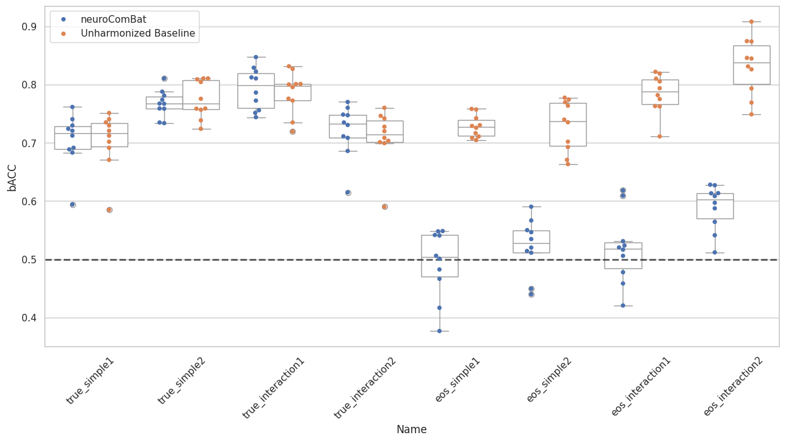

Notebook Explanation#
1) Setup and imports#
Imported plotting (
matplotlib,seaborn) and data tools (pandas).Imported machine learning models (
LogisticRegression,RandomForestClassifier) and metric (balanced_accuracy_score).Imported harmonization tools from
uniharmony(NeuroComBat,load_MAREoS).Set logging/warnings to keep output cleaner.
import warnings
import matplotlib.pyplot as plt
import pandas as pd
import seaborn as sns
from sklearn.ensemble import RandomForestClassifier
from sklearn.exceptions import ConvergenceWarning
from sklearn.linear_model import LogisticRegression
from sklearn.metrics import balanced_accuracy_score
from uniharmony import verbosity
from uniharmony.combat import NeuroComBat
from uniharmony.datasets import load_MAREoS
sns.set_theme(style="whitegrid")
verbosity("warning")
warnings.filterwarnings(action="ignore", category=ConvergenceWarning)
/opt/hostedtoolcache/Python/3.14.3/x64/lib/python3.14/site-packages/tqdm/auto.py:21: TqdmWarning: IProgress not found. Please update jupyter and ipywidgets. See https://ipywidgets.readthedocs.io/en/stable/user_install.html
from .autonotebook import tqdm as notebook_tqdm
2) Load MAREoS benchmark dataset#
datasets = load_MAREoS()loads simulated neuroimaging benchmark data.The dataset contains multiple scenarios (
truevseoseffects;simplevsinteraction; example 1/2).
# Load the MAREoS dataset (made for benchmarking harmonization methods)
datasets = load_MAREoS()
# Define the different effects, effect types, and examples to iterate over
effects = ["true", "eos"]
effect_types = ["simple", "interaction"]
effect_examples = ["1", "2"]
random_state = 23
# Asigne an empty list to each key in the results dictionary
unharmonized_results = []
neurocombat_results = []
# Define the harmonization model to use (NeuroComBat in this case)
harm_model = NeuroComBat()
Downloading file 'public_datasets.zip' from 'https://www.imardgroup.com/mareos-benchmark/public_datasets.zip' to '/home/runner/.cache/uniharmony'.
0%| | 0.00/3.66M [00:00<?, ?B/s]
3%|▉ | 96.3k/3.66M [00:00<00:04, 735kB/s]
9%|███▎ | 321k/3.66M [00:00<00:02, 1.29MB/s]
18%|██████▊ | 656k/3.66M [00:00<00:01, 1.84MB/s]
29%|██████████▊ | 1.06M/3.66M [00:00<00:01, 2.32MB/s]
44%|████████████████▍ | 1.62M/3.66M [00:00<00:00, 2.98MB/s]
69%|█████████████████████████▍ | 2.51M/3.66M [00:00<00:00, 4.20MB/s]
0%| | 0.00/3.66M [00:00<?, ?B/s]
100%|█████████████████████████████████████| 3.66M/3.66M [00:00<00:00, 4.61GB/s]
Unzipping contents of '/home/runner/.cache/uniharmony/public_datasets.zip' to '/home/runner/.cache/uniharmony/MAREoS'
3) Experiment loop#
Iterates all combinations:
effect=trueoreoseffect_type=simpleorinteractionexample=1or2
For each combination:
Choose classifier: logistic regression for simple; random forest for interaction.
Extract data:
X,y,sites,folds.Do leave-one-fold-out cross-validation:
train on folds != current fold
test on fold == current fold
Train baseline classifier on unharmonized training data and compute balanced accuracy on raw test.
Harmonize training with
NeuroComBat.fit_transform(...), then train classifier, transform test, compute balanced accuracy.
Collect results into two lists and then into DataFrames.
for effect in effects:
for e_types in effect_types:
if e_types == "interaction":
clf = RandomForestClassifier(random_state=random_state)
elif e_types == "simple":
clf = LogisticRegression(random_state=random_state)
for e_example in effect_examples:
example = effect + "_" + e_types + e_example
print("Experiment name: " + example)
data = datasets[example]
sites = data["sites"]
X = data["X"]
folds = data["folds"]
folds = pd.Series(folds)
sites = data["sites"]
target = data["y"]
covars = target.ravel().reshape(-1, 1)
for fold in folds.unique():
# Train Data
X = data["X"].copy()
y = data["y"].copy()
sites = data["sites"].copy()
# Train Target
X_train = X[data["folds"] != fold]
site_train = sites[data["folds"] != fold]
y_train = y[data["folds"] != fold]
# Test data
X_test = X[data["folds"] == fold]
site_test = sites[data["folds"] == fold]
# Test target
y_test = y[data["folds"] == fold]
# Unharmonized baseline model
clf.fit(X_train, y_train)
unharmonized_results.append(
[
balanced_accuracy_score(y_true=y_test, y_pred=clf.predict(X=X_test)),
fold,
effect,
e_types,
e_example,
example,
]
)
# neuroComBat (do not include target as covariate - avoiding data leakage)
X_train_harm = harm_model.fit_transform(X=X_train, sites=site_train)
# Fit the model with the harmonized train
clf.fit(X_train_harm, y_train)
# harmonize the test data
X_test_harm = harm_model.transform(X=X_test, sites=site_test)
neurocombat_results.append(
[
balanced_accuracy_score(y_true=y_test, y_pred=clf.predict(X=X_test_harm)),
fold,
effect,
e_types,
e_example,
example,
]
)
Experiment name: true_simple1
Experiment name: true_simple2
Experiment name: true_interaction1
Experiment name: true_interaction2
Experiment name: eos_simple1
Experiment name: eos_simple2
Experiment name: eos_interaction1
---------------------------------------------------------------------------
KeyboardInterrupt Traceback (most recent call last)
Cell In[3], line 43
39 # Test target
40 y_test = y[data["folds"] == fold]
41
42 # Unharmonized baseline model
---> 43 clf.fit(X_train, y_train)
44 unharmonized_results.append(
45 [
46 balanced_accuracy_score(y_true=y_test, y_pred=clf.predict(X=X_test)),
File /opt/hostedtoolcache/Python/3.14.3/x64/lib/python3.14/site-packages/sklearn/base.py:1336, in _fit_context.<locals>.decorator.<locals>.wrapper(estimator, *args, **kwargs)
1329 estimator._validate_params()
1331 with config_context(
1332 skip_parameter_validation=(
1333 prefer_skip_nested_validation or global_skip_validation
1334 )
1335 ):
-> 1336 return fit_method(estimator, *args, **kwargs)
File /opt/hostedtoolcache/Python/3.14.3/x64/lib/python3.14/site-packages/sklearn/ensemble/_forest.py:486, in BaseForest.fit(self, X, y, sample_weight)
475 trees = [
476 self._make_estimator(append=False, random_state=random_state)
477 for i in range(n_more_estimators)
478 ]
480 # Parallel loop: we prefer the threading backend as the Cython code
481 # for fitting the trees is internally releasing the Python GIL
482 # making threading more efficient than multiprocessing in
483 # that case. However, for joblib 0.12+ we respect any
484 # parallel_backend contexts set at a higher level,
485 # since correctness does not rely on using threads.
--> 486 trees = Parallel(
487 n_jobs=self.n_jobs,
488 verbose=self.verbose,
489 prefer="threads",
490 )(
491 delayed(_parallel_build_trees)(
492 t,
493 self.bootstrap,
494 X,
495 y,
496 sample_weight,
497 i,
498 len(trees),
499 verbose=self.verbose,
500 class_weight=self.class_weight,
501 n_samples_bootstrap=n_samples_bootstrap,
502 missing_values_in_feature_mask=missing_values_in_feature_mask,
503 )
504 for i, t in enumerate(trees)
505 )
507 # Collect newly grown trees
508 self.estimators_.extend(trees)
File /opt/hostedtoolcache/Python/3.14.3/x64/lib/python3.14/site-packages/sklearn/utils/parallel.py:91, in Parallel.__call__(self, iterable)
79 warning_filters = (
80 filters_func() if filters_func is not None else warnings.filters
81 )
83 iterable_with_config_and_warning_filters = (
84 (
85 _with_config_and_warning_filters(delayed_func, config, warning_filters),
(...) 89 for delayed_func, args, kwargs in iterable
90 )
---> 91 return super().__call__(iterable_with_config_and_warning_filters)
File /opt/hostedtoolcache/Python/3.14.3/x64/lib/python3.14/site-packages/joblib/parallel.py:1986, in Parallel.__call__(self, iterable)
1984 output = self._get_sequential_output(iterable)
1985 next(output)
-> 1986 return output if self.return_generator else list(output)
1988 # Let's create an ID that uniquely identifies the current call. If the
1989 # call is interrupted early and that the same instance is immediately
1990 # reused, this id will be used to prevent workers that were
1991 # concurrently finalizing a task from the previous call to run the
1992 # callback.
1993 with self._lock:
File /opt/hostedtoolcache/Python/3.14.3/x64/lib/python3.14/site-packages/joblib/parallel.py:1914, in Parallel._get_sequential_output(self, iterable)
1912 self.n_dispatched_batches += 1
1913 self.n_dispatched_tasks += 1
-> 1914 res = func(*args, **kwargs)
1915 self.n_completed_tasks += 1
1916 self.print_progress()
File /opt/hostedtoolcache/Python/3.14.3/x64/lib/python3.14/site-packages/sklearn/utils/parallel.py:184, in _FuncWrapper.__call__(self, *args, **kwargs)
180 this_warning_filter_dict[special_key] = this_value.pattern
182 warnings.filterwarnings(**this_warning_filter_dict, append=True)
--> 184 return self.function(*args, **kwargs)
File /opt/hostedtoolcache/Python/3.14.3/x64/lib/python3.14/site-packages/sklearn/ensemble/_forest.py:188, in _parallel_build_trees(tree, bootstrap, X, y, sample_weight, tree_idx, n_trees, verbose, class_weight, n_samples_bootstrap, missing_values_in_feature_mask)
185 elif class_weight == "balanced_subsample":
186 curr_sample_weight *= compute_sample_weight("balanced", y, indices=indices)
--> 188 tree._fit(
189 X,
190 y,
191 sample_weight=curr_sample_weight,
192 check_input=False,
193 missing_values_in_feature_mask=missing_values_in_feature_mask,
194 )
195 else:
196 tree._fit(
197 X,
198 y,
(...) 201 missing_values_in_feature_mask=missing_values_in_feature_mask,
202 )
File /opt/hostedtoolcache/Python/3.14.3/x64/lib/python3.14/site-packages/sklearn/tree/_classes.py:297, in BaseDecisionTree._fit(self, X, y, sample_weight, check_input, missing_values_in_feature_mask)
294 self.n_outputs_ = y.shape[1]
296 if is_classification:
--> 297 check_classification_targets(y)
298 y = np.copy(y)
300 self.classes_ = []
File /opt/hostedtoolcache/Python/3.14.3/x64/lib/python3.14/site-packages/sklearn/utils/multiclass.py:213, in check_classification_targets(y)
201 def check_classification_targets(y):
202 """Ensure that target y is of a non-regression type.
203
204 Only the following target types (as defined in type_of_target) are allowed:
(...) 211 Target values.
212 """
--> 213 y_type = type_of_target(y, input_name="y")
214 if y_type not in [
215 "binary",
216 "multiclass",
(...) 219 "multilabel-sequences",
220 ]:
221 raise ValueError(
222 f"Unknown label type: {y_type}. Maybe you are trying to fit a "
223 "classifier, which expects discrete classes on a "
224 "regression target with continuous values."
225 )
File /opt/hostedtoolcache/Python/3.14.3/x64/lib/python3.14/site-packages/sklearn/utils/multiclass.py:432, in type_of_target(y, input_name, raise_unknown)
430 if issparse(first_row_or_val):
431 first_row_or_val = first_row_or_val.data
--> 432 if cached_unique(y).shape[0] > 2 or (y.ndim == 2 and len(first_row_or_val) > 1):
433 # [1, 2, 3] or [[1., 2., 3]] or [[1, 2]]
434 return "multiclass" + suffix
435 else:
File /opt/hostedtoolcache/Python/3.14.3/x64/lib/python3.14/site-packages/sklearn/utils/_unique.py:105, in cached_unique(xp, *ys)
81 def cached_unique(*ys, xp=None):
82 """Return the unique values of ys.
83
84 Use the cached values from dtype.metadata if present.
(...) 103 Unique values of ys.
104 """
--> 105 res = tuple(_cached_unique(y, xp=xp) for y in ys)
106 if len(res) == 1:
107 return res[0]
File /opt/hostedtoolcache/Python/3.14.3/x64/lib/python3.14/site-packages/sklearn/utils/_unique.py:105, in <genexpr>(.0)
81 def cached_unique(*ys, xp=None):
82 """Return the unique values of ys.
83
84 Use the cached values from dtype.metadata if present.
(...) 103 Unique values of ys.
104 """
--> 105 res = tuple(_cached_unique(y, xp=xp) for y in ys)
106 if len(res) == 1:
107 return res[0]
File /opt/hostedtoolcache/Python/3.14.3/x64/lib/python3.14/site-packages/sklearn/utils/_unique.py:78, in _cached_unique(y, xp)
76 pass
77 xp, _ = get_namespace(y, xp=xp)
---> 78 return xp.unique_values(y)
File /opt/hostedtoolcache/Python/3.14.3/x64/lib/python3.14/site-packages/sklearn/externals/array_api_compat/_internal.py:34, in get_xp.<locals>.inner.<locals>.wrapped_f(*args, **kwargs)
32 @wraps(f)
33 def wrapped_f(*args: object, **kwargs: object) -> object:
---> 34 return f(*args, xp=xp, **kwargs)
File /opt/hostedtoolcache/Python/3.14.3/x64/lib/python3.14/site-packages/sklearn/externals/array_api_compat/common/_aliases.py:254, in unique_values(x, xp)
253 def unique_values(x: Array, /, xp: Namespace) -> Array:
--> 254 kwargs = _unique_kwargs(xp)
255 return xp.unique(
256 x,
257 return_counts=False,
(...) 260 **kwargs,
261 )
File /opt/hostedtoolcache/Python/3.14.3/x64/lib/python3.14/site-packages/sklearn/externals/array_api_compat/common/_aliases.py:203, in _unique_kwargs(xp)
199 def _unique_kwargs(xp: Namespace) -> dict[str, bool]:
200 # Older versions of NumPy and CuPy do not have equal_nan. Rather than
201 # trying to parse version numbers, just check if equal_nan is in the
202 # signature.
--> 203 s = inspect.signature(xp.unique)
204 if "equal_nan" in s.parameters:
205 return {"equal_nan": False}
File /opt/hostedtoolcache/Python/3.14.3/x64/lib/python3.14/inspect.py:3319, in signature(obj, follow_wrapped, globals, locals, eval_str, annotation_format)
3314 rendered += ' -> {}'.format(anno)
3316 return rendered
-> 3319 def signature(obj, *, follow_wrapped=True, globals=None, locals=None, eval_str=False,
3320 annotation_format=Format.VALUE):
3321 """Get a signature object for the passed callable."""
3322 return Signature.from_callable(obj, follow_wrapped=follow_wrapped,
3323 globals=globals, locals=locals, eval_str=eval_str,
3324 annotation_format=annotation_format)
KeyboardInterrupt:
4) Compute and combine results#
Convert baseline and harmonized scores into DataFrames with columns:
bACC,Fold,Effect,Type,Example,Name,Method
Combine with
pd.concat()intoresults.
# Results to datadframe
unharmonized_results = pd.DataFrame(data=unharmonized_results, columns=["bACC", "Fold", "Effect", "Type", "Example", "Name"])
unharmonized_results["Method"] = "Unharmonized Baseline"
neurocombat_results = pd.DataFrame(data=neurocombat_results, columns=["bACC", "Fold", "Effect", "Type", "Example", "Name"])
neurocombat_results["Method"] = "neuroComBat"
results = pd.concat([unharmonized_results, neurocombat_results])
5) Plot results#
Create swarm + box plot (for each experiment name) comparing:
Unharmonized BaselineneuroComBat
Add chance-level horizontal line at
0.5.Show how harmonization affects classification performance across scenarios.
# %% Plotting resuts
fig, ax = plt.subplots(1, 1, figsize=[15, 7])
harm_methods = [
"neuroComBat",
"Unharmonized Baseline",
]
sns.swarmplot(data=results, x="Name", y="bACC", hue="Method", hue_order=harm_methods, dodge=True, ax=ax)
sns.boxplot(
data=results,
color="w",
zorder=1,
x="Name",
y="bACC",
hue="Method",
hue_order=harm_methods,
dodge=True,
ax=ax,
palette=["w"] * len(harm_methods),
)
handles, labels = ax.get_legend_handles_labels()
ax.legend(handles[: len(harm_methods)], labels[: len(harm_methods)])
ax.axhline(0.5, lw=2, color="k", ls="--", alpha=0.7, label="Chance level")
plt.grid(axis="y")
plt.grid(axis="y")
plt.xticks(rotation=45)
plt.show()
# %%

6) Take-home message#
The final markdown note states:
neuroComBatremoves theeossite effect while preserving thetruesignal.
The plot and results demonstrate the method’s ability to reduce spurious site-related variation and maintain true biological effect performance.